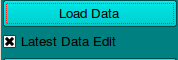
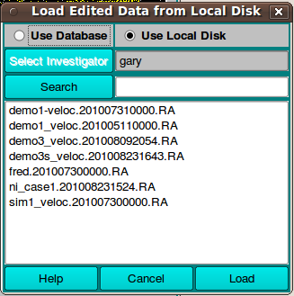
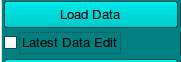
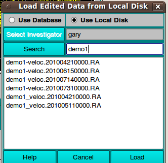

Manual
Manual
Manual
Manual
Loading data from FE Match invokes a load dialog in which the lists presented may differ, depending on whether "Latest Data Edit" is checked or not. In the checked case, only the latest edits for each run ID are shown. In the unchecked case, all edits for run ID's are shown. A right mouse button click on any entry pops up a small text window giving details on the data. A left mouse button click on an item selects it. The Load button can then be used to load the data and exit this dialog.
In the default checked case (

) the list contains only one edit, the latest one, for each run ID.
In the unchecked case (

) the list may contain multiple edits for each run ID. You may choose any one of them, including one other than the latest of the run. Note in the example below that the list has been shortened by typing text into the Search box to filter run ID's examined.